Una experiencia unica
Experiencia
Airbag
No es solo una banda
de rock
EL VIAJE RECIÉN COMIENZA
descubrí el universo Airbag
SU MÚSICA
El sonido de Airbag
Elegí un álbum
Hacé clic en una de las portadas para descubrir sus canciones.
Airbag
2004
Canciones
01. La partida de la gitana
02. Quiero estar contigo
03. Solo aquí
04. Esperando otra vez
05. Será por ti
06. Dejaré la ciudad
07. No me abandones
08. No puedo olvidarte
09. Salía del colegio
10. Ya no recuerdo
11. Tus ojos me engañan
12. Desesperado
Blanco y Negro
2006
Canciones
01. All Night Long
02. Amor de verano
03. Sin tu amor
04. Mi razón
05. Carol, no dejes la ciudad
06. Esta noche
07. Doctora
08. Buscandote
09. Comenzar
10. Viejo amigo
11. Y tú
Una Hora a Tokyo
2009
Canciones
01. ¿Revolución?
02. Mi sensación
03. Una Hora a Tokyo
04. Noches de abril
05. Lo sentirás
06. Lejos del sol
07. Ella no está
08. Un dia diferente
09. Dulce condena
10. Algo en mi mente
11. Sinfonía eléctrica
12. Blues
Voragine
2011
Canciones
01. Tu Nombre
02. Donde Vas
03. Cadenas
04. Tu Locura
05. Cae el sol
06. Estado Salvaje
07. Bajos Instintos
08. Diez Días Después
09. Vorágine
10. Encerrada en el Placard
11. Mecanismos de Control
12. Otoño del 82
Libertad
2013
Canciones
01. Fugitivo
02. Algo Personal
03. Por Mil Noches
04. Sube Sube(El Peso del Mundo)
05. Sacrificios
06. Noches de Insomnio
07. Todo Pasa
08. La Moda del Montón
09. Navidad
10. Sonidos Criminales
11. Libertad
12. Acrata
13. Multitud
14. Kalashnikov
15. Testigos de la Destrucción
Mentira La Verdad
2016
Canciones
01. Huracán
02. Vivamos el Momento
03. Colombiana
04. Gran Encuentro
05. Relámpagos
06. Culpables
07. Cicatrices
08. Primavera 2001
09. Tu banda
10. Apocalipsis Confort
11. Mentira la Verdad
Al Parecer Todo Ha Sido Una Trampa
2021
Canciones
01. Intoxicarme
02. Pensamientos
03. Kamikaze
04. Ganas de Verte
05. Jinetes Cromados
06. Va a Ser Difícil Olvidar
07. Cuchillos Guantanamera
08. Campos Elíseos
09. Mamba Negra
10. Motor Enfermo(Frankenstein)
11. Al Parecer Todo Ha Sido Una Trampa
12. Volver a Casa
13. Perdido
14. Como un Diamante
15. Mila, Saturno y el Río
16. über Puber
17. Así de Fácil
Airbag-En vivo Estadio Vélez
2024
Canciones
01. Perdido-En Vivo
02. Por Mil Noches-En Vivo
03. Intoxicarme-En Vivo
04. Solo Aquí-En Vivo
05. Cae el sol-En Vivo
06. Noches de Insomnio-En Vivo
07. Vivamos el Momento-En Vivo
08. Have you ever seen the rain-En Vivo
09. La partida de la gitana-En Vivo
10. Diez Días Después-En Vivo
11. Colombiana-En Vivo
12. Pensamientos-En Vivo
13. Apocalipsis Confort-En Vivo
14. Nunca lo olvides-En Vivo
15. Cuchillos Guantanamera-En Vivo
16. Motor Enfermo-En Vivo
17. Ganas de Verte-En Vivo
18. Huracán-En Vivo
19. Kalashnikov-En Vivo
20. Como un Diamante-En Vivo
21. Mi Sensación-En Vivo
22. La Moda del Montón-En Vivo
23. Uber Puber-En Vivo
24. Jinetes Cromados-En Vivo
25. Himno Nacional Argentino-En Vivo
El Club de la Pelea
2025
Canciones
01. No Confíes En Tu Suerte
02. Por Eso Nadie Recordará tu Nombre
03. Extrañas Intenciones
04. Corazón Lunático
05. Nunca Lo Olvides
06. Anarquia en Buenos Aires
07. Verte De Cerca
08. El Hombre Puerco
09. Especial 56
10. Irme Lejos
Canciones destacadas
Algunas canciones que forman parte del universo Airbag.
Por Mil Noches
Libertad
Pensamientos
AlParecerTodoHaSidoUnaTrampa
Cicatrices
MentiraLaVerdad
Cae el Sol
Vorágine
Verte de Cerca
ElClubDeLaPelea
Elegí una canción para escucharla
LA BANDA
Tres hermanos, un mismo sonido
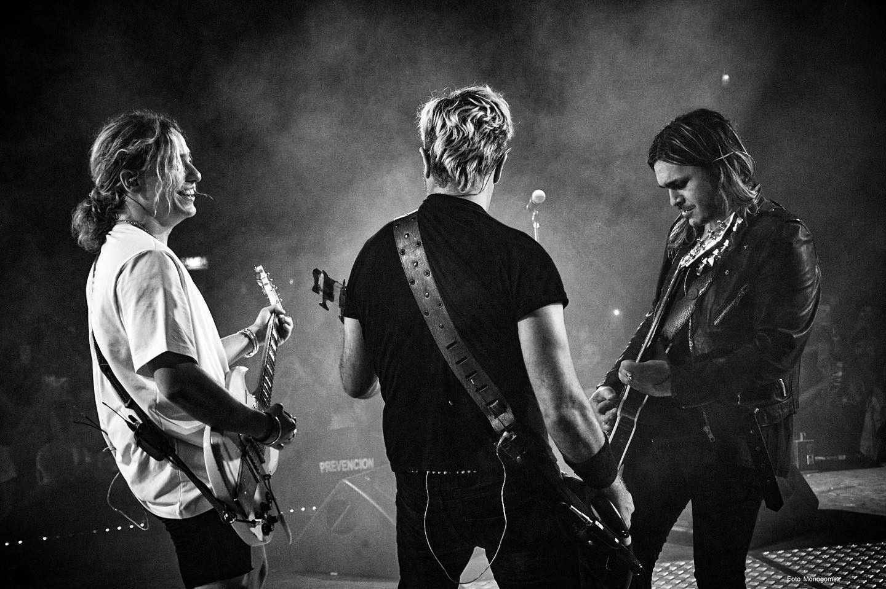
Una historia que sigue sonando
Airbag es una banda argentina de rock creada por los hermanos Patricio, Gastón y Guido Sardelli en Don Torcuato(Provincia de Buenos Aires). Comenzaron interpretando los clásicos covers de Chuck Berry, Creedance y The Beatles (entre otros), bajo el nombre de "Los Nietos de Chuck". Mas tarde empezarian a componer y a realizar sus primeros pequeños shows y asi uno de sus demos llegarian a las manos de la compañia Warner Music. Allí grabaron y lanzaron su primer disco llamado "Airbag" (2004), el cual contiene uno de sus mayores exitos "La Partida de la Gitana (si te vas)". Años mas tarde la banda sigue sonando mas fuerte que nunca y llenando grandes estadios con su musica en todo el mundo. Desde sus comienzos, construyeron una identidad propia que combina el rock clásico, la energía de los escenarios y una fuerte conexión con su público, el resto es historia...
Conocé a los Sardelli
Tocá cada integrante para conocer más sobre él.
Nacimiento: 26 de enero de 1986.
Lugar: Don Torcuato, Buenos Aires.
Rol: Voz principal, guitarra y teclados.
Patricio es uno de los hermanos fundadores de Airbag y participa como cantante, guitarrista y compositor de la banda.
Nacimiento: 18 de abril de 1982.
Lugar: Don Torcuato, Buenos Aires.
Rol: Bajo y coros.
Gastón es el mayor de los hermanos Sardelli y encargado del bajo y los coros de la banda.
Nacimiento: 5 de diciembre de 1988.
Lugar: Don Torcuato, Buenos Aires.
Rol: Guitarra, voz y batería.
Guido es el menor de los sardellis, comenzó tocando la batería y desde 2008 pasó a ocupar un rol central en guitarra y voz.
EN VIVO
La energía de un recital
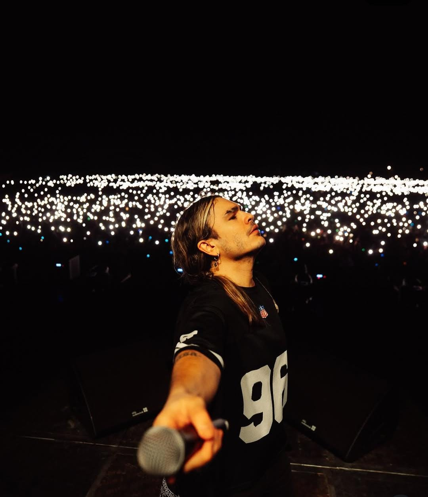
Cuando las luces se apagan, empieza el show.
Miles de personas, luces, guitarras y canciones cantadas a una sola voz.
Los recitales son una parte fundamental de la experiencia Airbag y de la conexión que la banda construyó con su público.
Buenos Aires
Estadio River Plate · Estadio Vélez Sarsfield
Córdoba
La Plaza de la Música · Estadio Kempes
Rosario
Metropolitano
Montevideo
Antel Arena
Madrid
Distintos escenarios de la ciudad
Barcelona
Sant Jordi Club
Ciudad de México
Teatro Metropólitan
Santiago
Giras internacionales
Lima
Giras internacionales
Bogotá
Royal Center
GALERÍA
Momentos que quedan
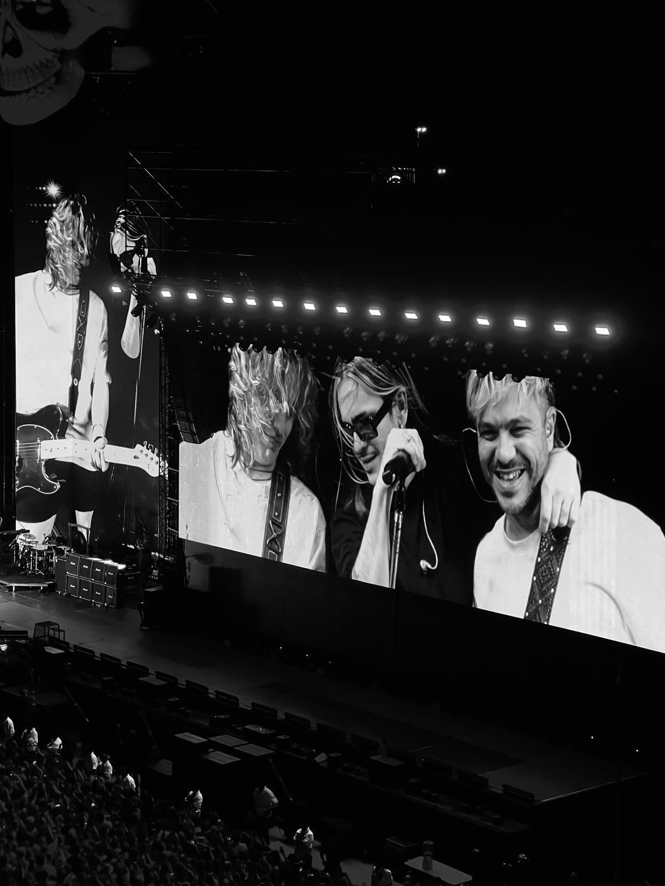
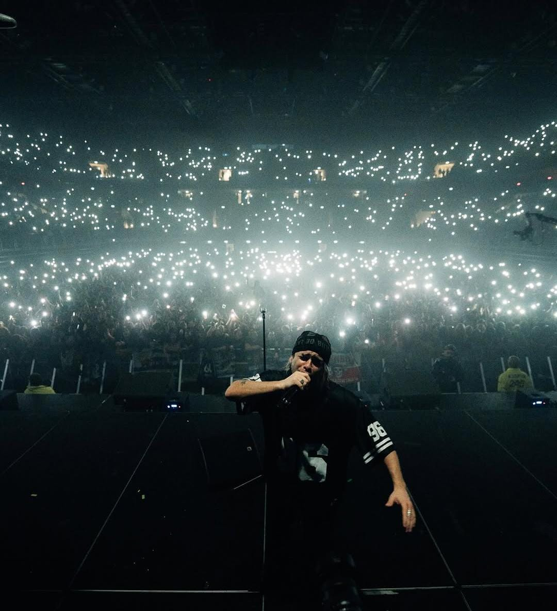
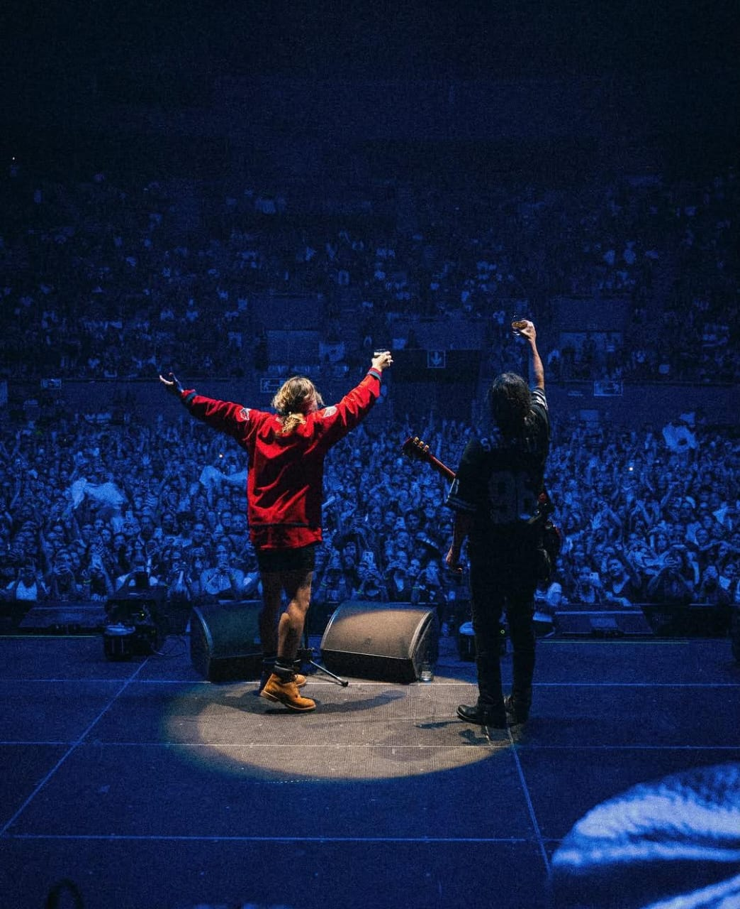
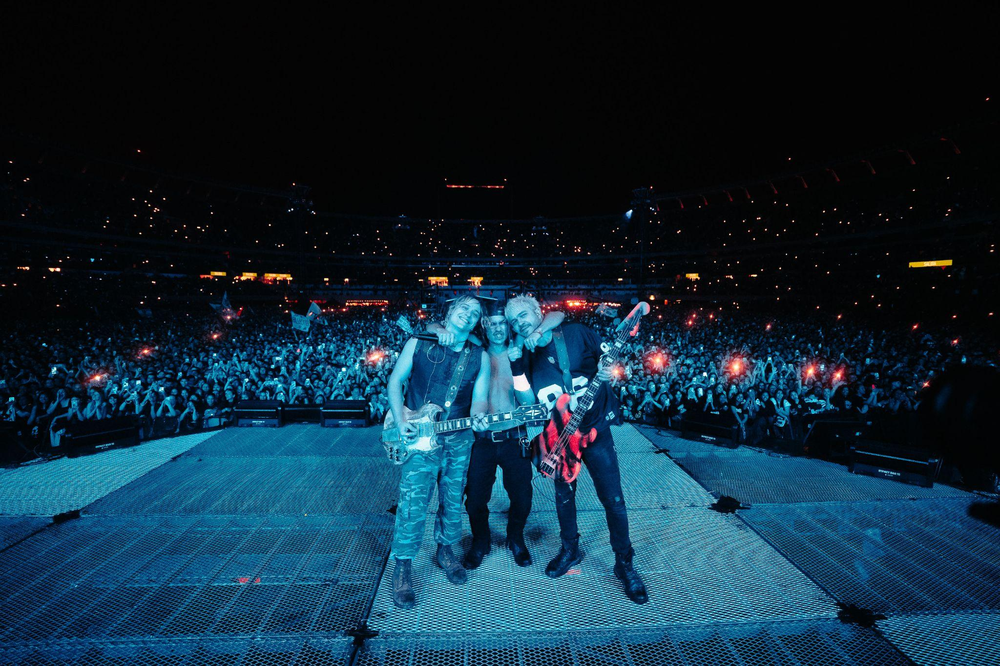
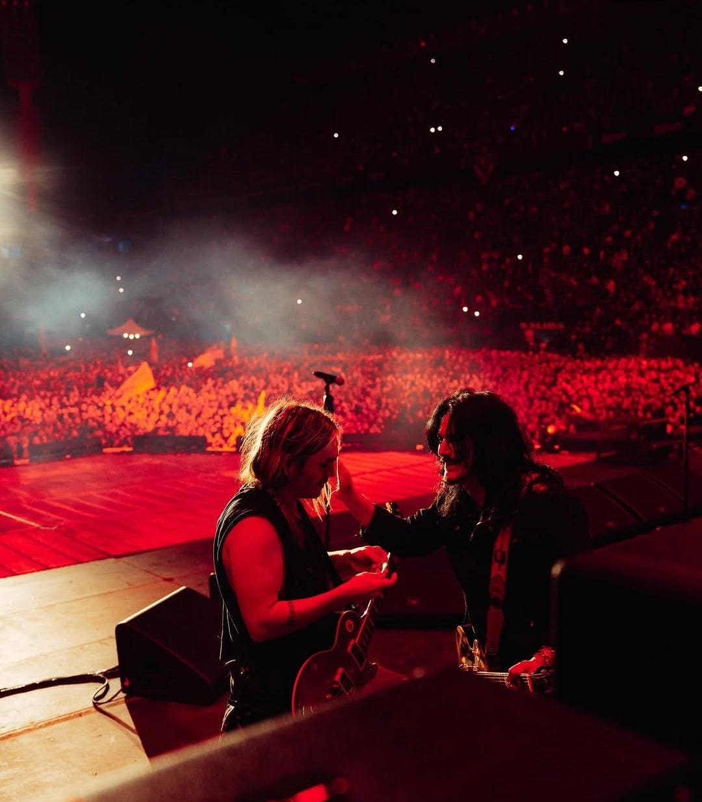
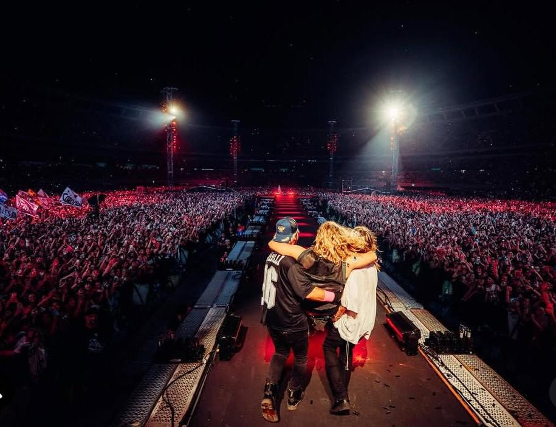
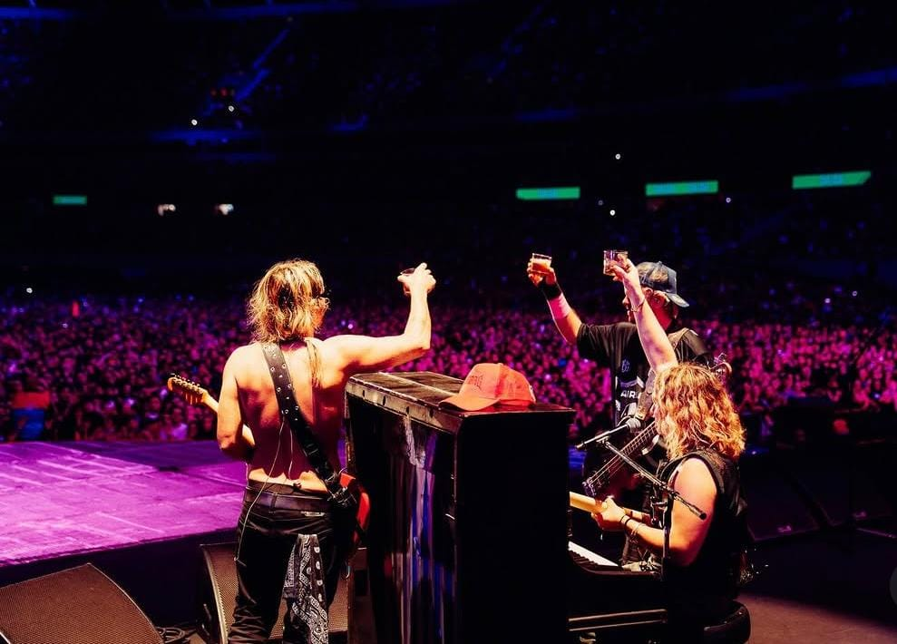
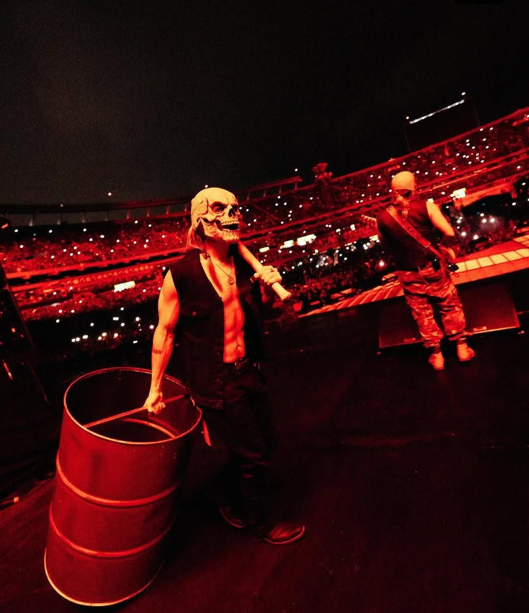
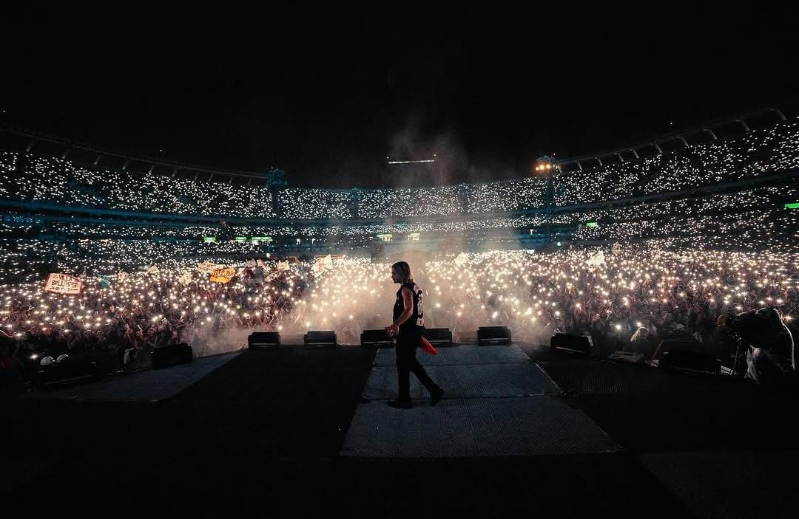
EL DESAFÍO
¿Cuánto sabés sobre Airbag?
Poné a prueba tus conocimientos.
Respondé las preguntas y descubrí cuánto conocés sobre la historia, la música y los recitales de Airbag.
¿En qué año se formó Airbag?
— TU EXPERIENCIA —
Ahora es tu turno!!
¿Qué significa Airbag para vos?
Hay canciones que simplemente escuchamos y otras que terminan formando parte de nuestra historia, queremos conocer cual es la tuya.
Contanos qué canción, recital o momento de Airbag significa algo especial para vos. Al final vas a poder ver quienes ya compartieron la suya y como lo viven ellos.